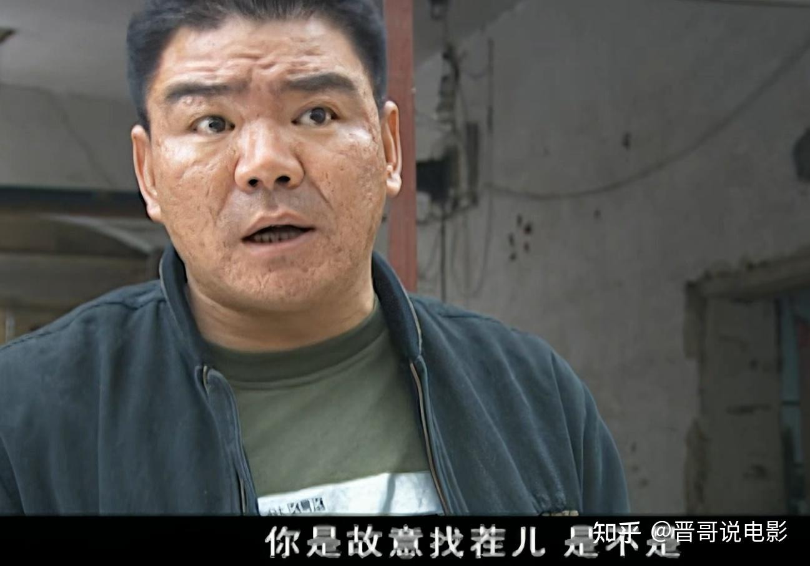

拍瓜实战 · 瓜摊一日游
称号 · 生瓜蛋子
🍉 开瓜图鉴
共开 0 个瓜

▼ 点击继续
操作:按住拖动旋转西瓜 · 滚轮/双指捏合缩放 · 点瓜 = 拍一拍 · 点手掌 = 掂一掂 · 对白框点击推进
挑瓜六式 · 图鉴
壹看纹路
深绿条纹清晰、间距宽、对比分明的是好瓜;纹路模糊发灰的多半没长开。
★ 纹路越“凶”,瓜越甜
贰看瓜斑
瓜身上贴着地的黄斑,颜色越黄越橙,熟得越透;发白的摘早了。
★ 黄斑发黄 = 保熟
叁看瓜脐
底部的圈圈越小越凹越好;脐大外凸的往往皮厚瓤少。
★ 脐小凹进去,皮薄馅大
肆看瓜蒂
瓜蒂弯曲、干枯的,是自然熟透摘的;蒂直挺发绿还带水灵的,可能是生瓜蛋子。
★ 卷毛干枯 > 直愣愣
伍听声音
托住拍一拍:熟瓜低沉“嘭嘭”震手;生瓜清脆“当当”;过熟发闷“噗噗”;空心带回响。
★ 嘭嘭带震感,直接拿下
陆掂分量
同样大小选偏轻的——熟瓜水分向糖分转化,会变轻;死沉的往往没熟。
★ 个大却轻,沙瓤预定
避坑指南 · 还得看秤
⚖️ 翻过秤盘
当年摊主在秤底下粘吸铁石,十五斤的瓜根本没十五斤。如今电子秤也有“密码秤”,可以要求先称手机验秤(手机重量上网一查便知)。
★ 买瓜先看秤,不当冤大头
🗣️ 不甜不要钱?
摊主拍胸脯说“我开水果摊的,能卖给你生瓜蛋子?”——能不能,切开才知道。尽量现场开瓜,或买已切开的半个。
★ 包甜听听就好,切开才算数
💰 别贪便宜堆
明显低于行情的瓜,可能是催熟、过熟或磕碰瓜。两块钱一斤的瓜没有了,但一分钱一分货的道理还在。
★ 便宜得反常,必有蹊跷
🔪 拍瓜别上刀
对瓜不满意,换一个摊主就是,千万别学华强掀摊子——治安拘留不包熟。
★ 和气生财,不兴动刀